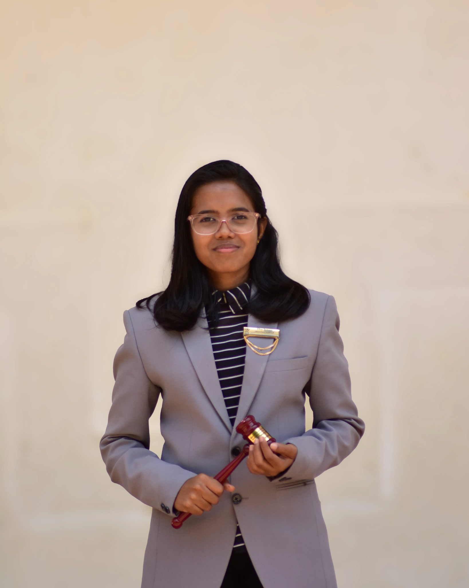
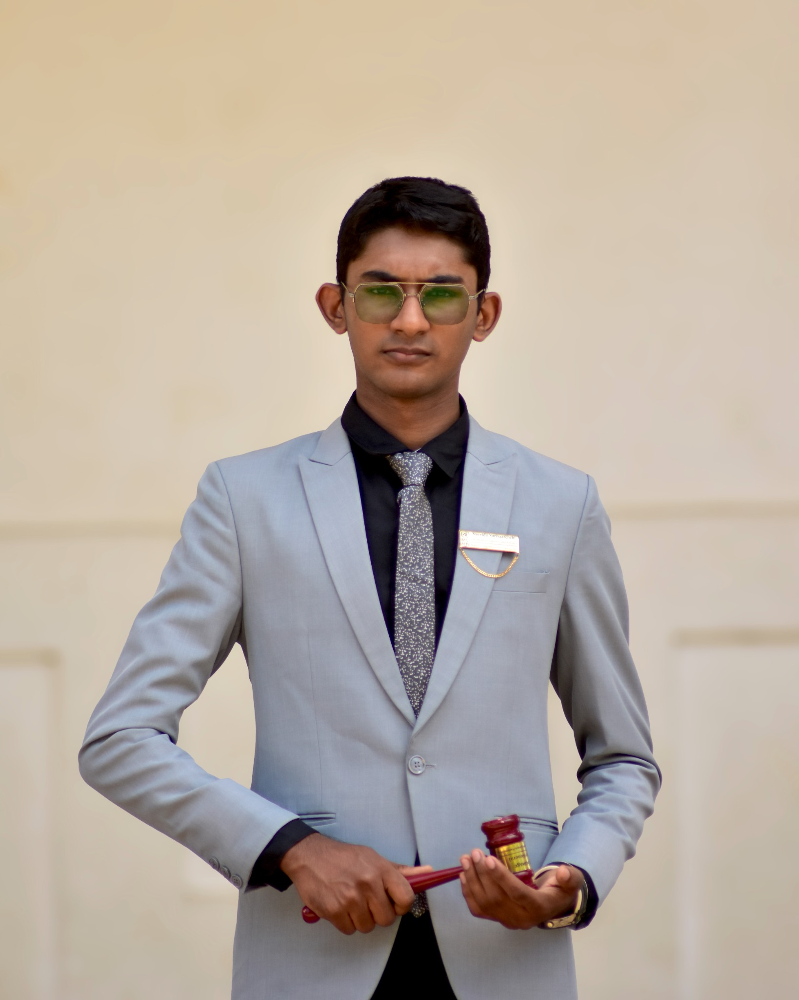
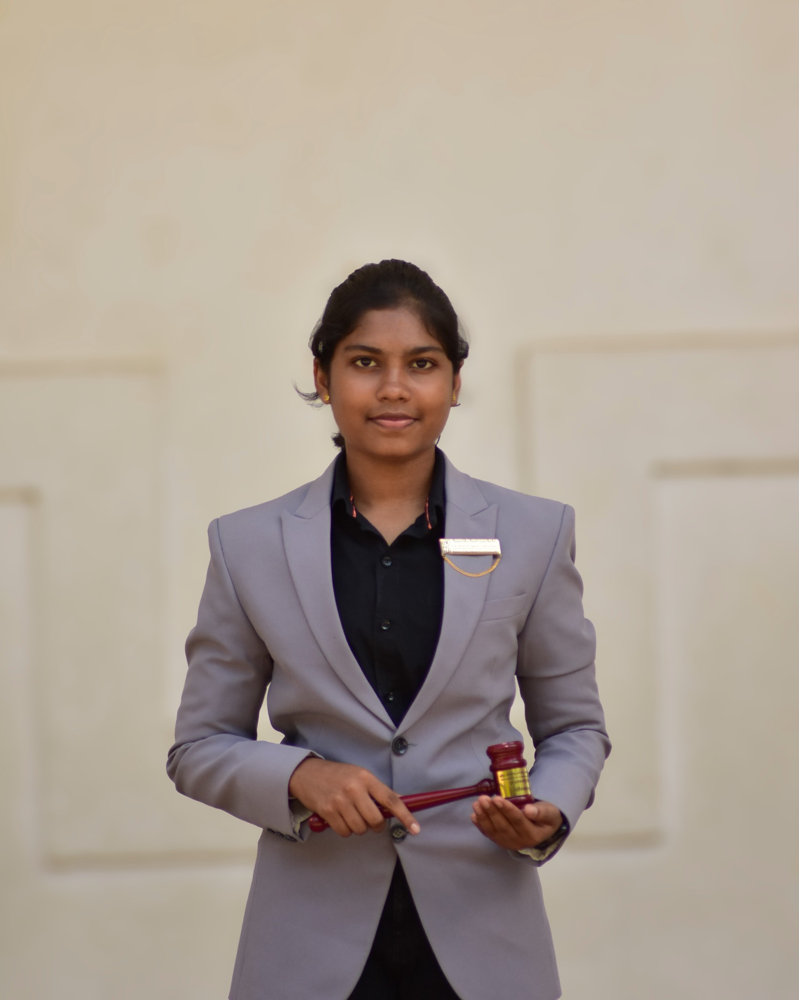
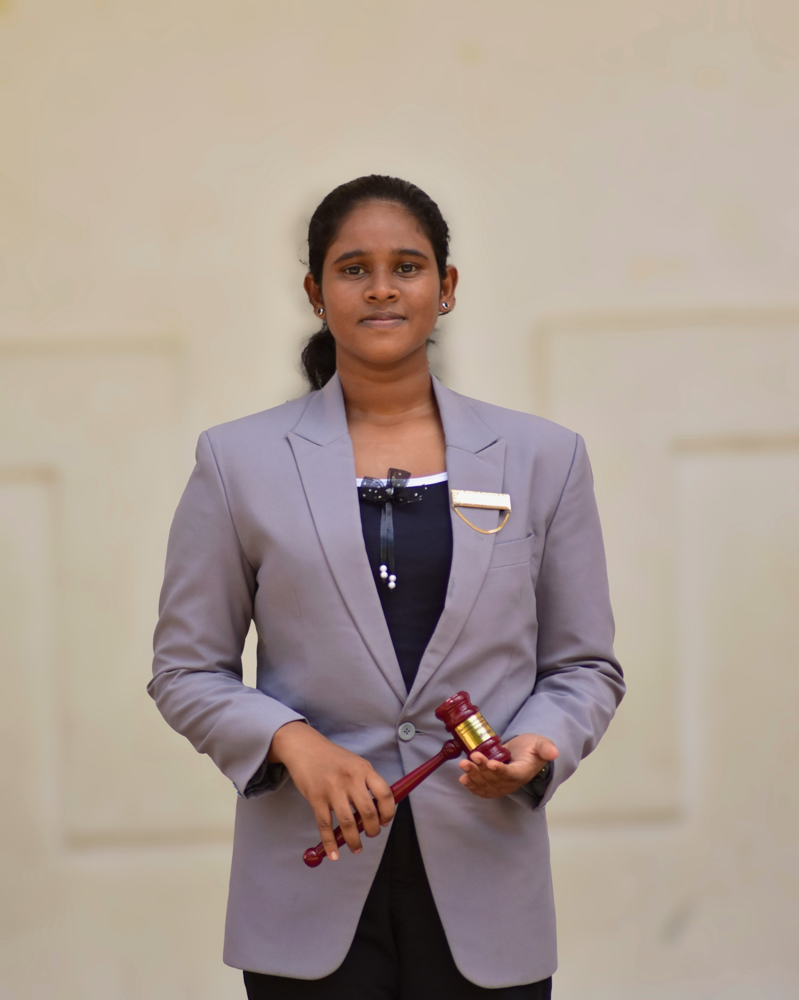
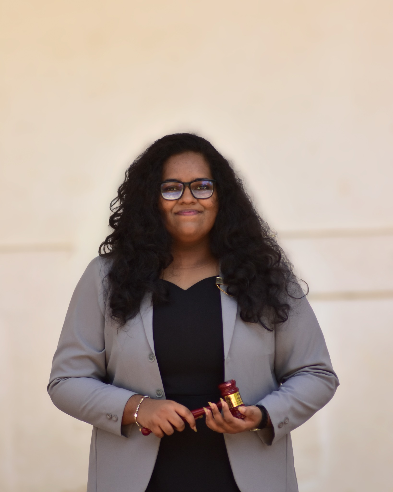
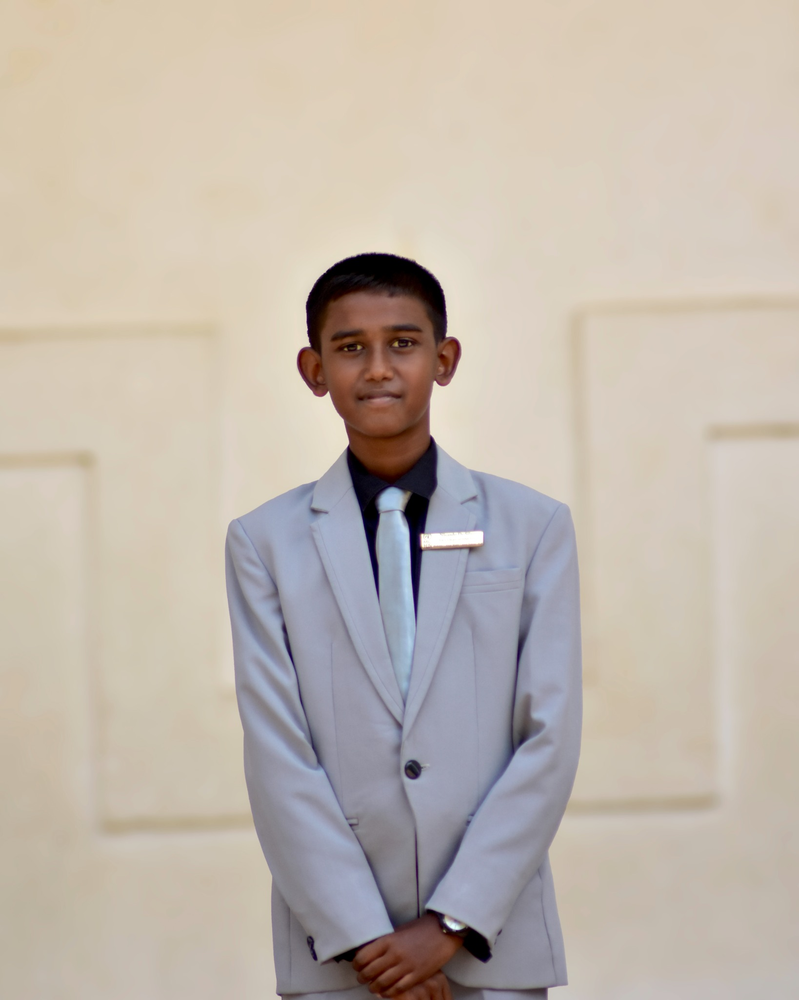

SECRETARY-GENERAL
Nisandu de Silva
Leading the vision and overall direction of SDCMUN'27.
THE PEOPLE BEHIND THE CONFERENCE
A team united by a shared vision, working behind the scenes to bring every part of the conference to life.
01 / EXECUTIVE LEADERSHIP
The leadership entrusted with shaping the conference.
Leading the vision and overall direction of SDCMUN'27.

Supporting the leadership and coordination of the conference.
02 / DEPARTMENTAL LEADERSHIP
Leading the key departments that bring the conference together.




03 / DIRECTORATE
Supporting the conference through specialised portfolios.
